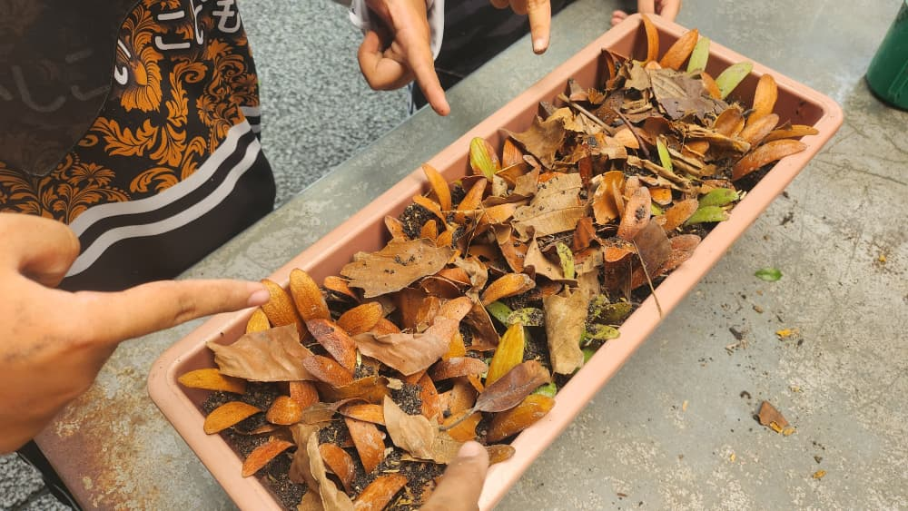

NGO involvement
Strategic Financial Outreach Associate · Small Changes MY
Role summary
- Supported fundraising and financial-outreach initiatives for Small Changes MY.
- Researched potential sponsors, donors, donor trends and relevant funding opportunities.
- Contributed to sponsorship proposals, outreach materials and partnership strategies.
- Developed analytical research, financial communication, business development, proposal writing and relationship-management skills.
Moments

